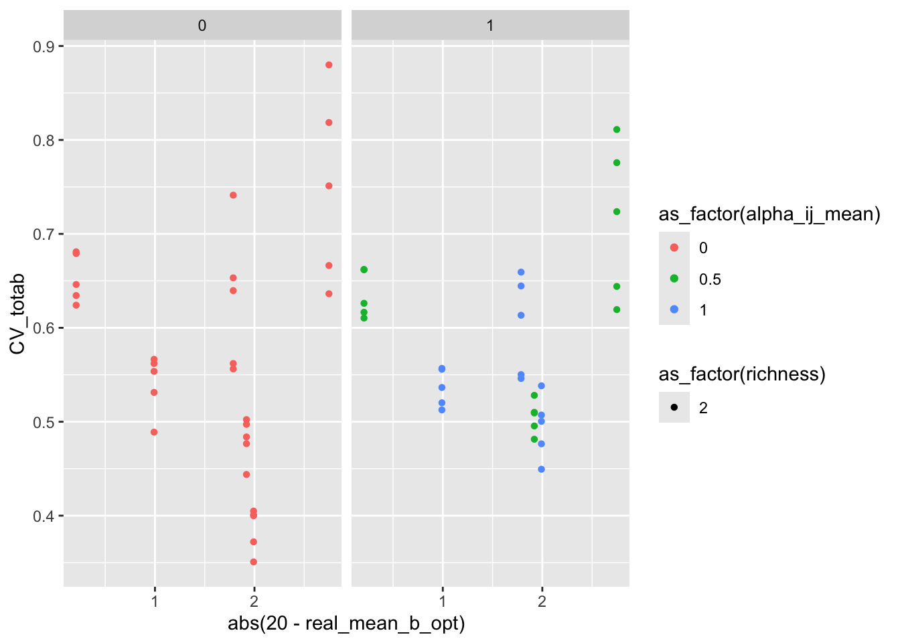
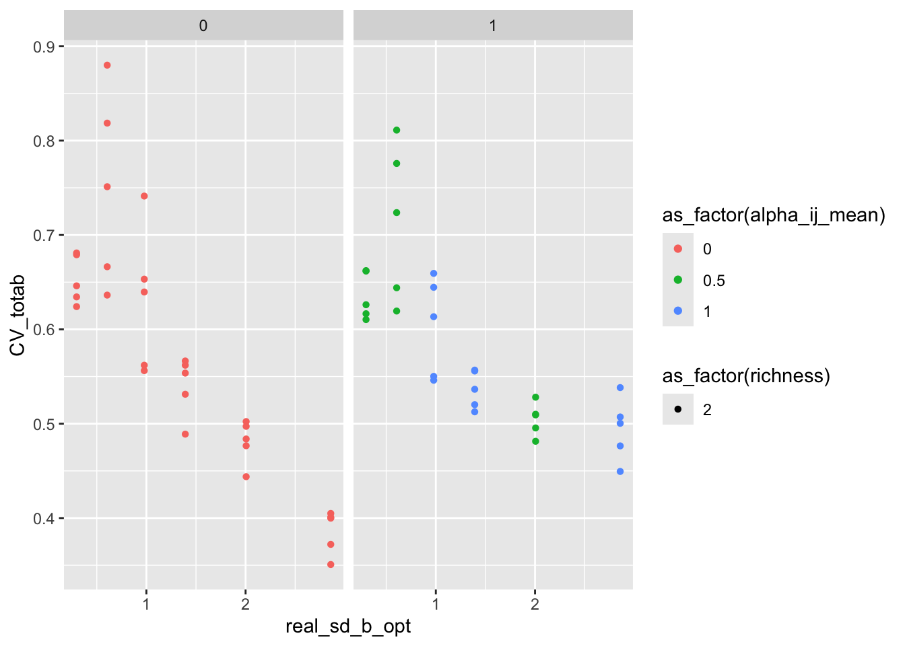
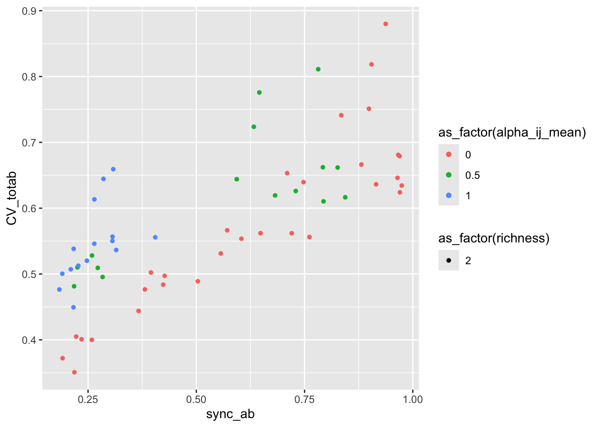
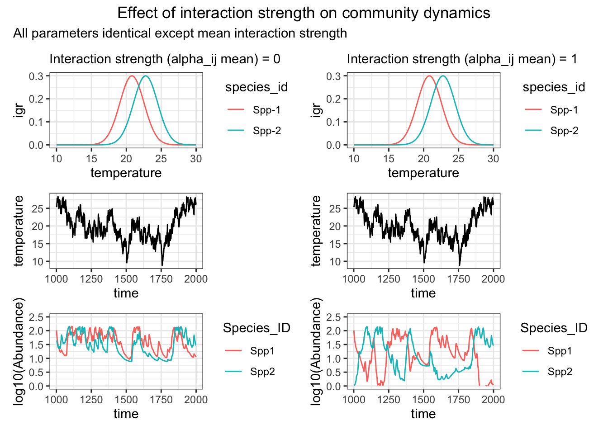

library(tidyverse)
library(here)
library(DBI)
library(RSQLite)
library(dbplyr)
library(patchwork)
experiment_folder <- here("simulation_study", "plot_effect_interactions", "data")
expt <- readRDS(file.path(experiment_folder, "experiment_table.RDS"))
community_measures <- readRDS(file.path(experiment_folder, "community_measures.RDS")) %>%
semi_join(expt, by = "case_id")
conn_temperatures <- dbConnect(SQLite(), file.path(experiment_folder, "temperatures.db"))
temperatures <- tbl(conn_temperatures, "temperatures")
conn_dynamics <- dbConnect(SQLite(), file.path(experiment_folder, "dynamics.db"))
dynamics <- tbl(conn_dynamics, "dynamics")
conn_arbitrary_derivs <- dbConnect(SQLite(), file.path(experiment_folder, "arbitrary_derivs.db"))
arbitrary_derivs <- tbl(conn_arbitrary_derivs, "derivs")
get_alpha_label <- function(expt, case_id) {
alpha_val <- expt %>%
filter(case_id == !!case_id) %>%
pull(alpha_ij_mean) %>%
unique()
paste0("Interaction strength (alpha_ij mean) = ", signif(alpha_val, 3))
}
make_plots_for_one_community <- function(case_id_oi) {
env_series_oi <- expt %>%
filter(case_id == case_id_oi) %>%
pull(env_series_id)
temperatures_oi <- collect(filter(temperatures, env_series_id == env_series_oi))
species_pars_oi <- collect(filter(arbitrary_derivs, case_id == case_id_oi))
dynamics_oi <- collect(filter(dynamics, case_id == case_id_oi))
p_tempseries <- ggplot(temperatures_oi, aes(time, temperature)) +
geom_line() +
theme_bw()
p_igrtemp <- ggplot(species_pars_oi, aes(temperature, igr, col = species_id)) +
geom_line() +
theme_bw()
p_dynamics <- ggplot(dynamics_oi, aes(time, log10(Abundance), col = Species_ID)) +
geom_line() +
ylim(c(0, 2.5)) +
theme_bw()
list(
p_tempseries = p_tempseries,
p_igrtemp = p_igrtemp,
p_dynamics = p_dynamics
)
}Interaction-Effects Subset Analysis
Subset Overview
tibble(
n_cases = nrow(expt),
n_community_seeds = n_distinct(expt$community_seed),
n_alpha_levels = n_distinct(expt$alpha_ij_mean),
richness_values = paste(sort(unique(expt$richness)), collapse = ", ")
)# A tibble: 1 × 4
n_cases n_community_seeds n_alpha_levels richness_values
<int> <int> <int> <chr>
1 60 6 3 2 community_measures %>%
select(alpha_ij_mean, alpha_ij_sd, richness, real_mean_b_opt, real_sd_b_opt, CV_totab, sync_ab, pop_CV_ab) %>%
summary() alpha_ij_mean alpha_ij_sd richness real_mean_b_opt real_sd_b_opt
Min. :0.000 Min. :0.0 Min. :2 Min. :18.08 Min. :0.2964
1st Qu.:0.000 1st Qu.:0.0 1st Qu.:2 1st Qu.:19.01 1st Qu.:0.6050
Median :0.250 Median :0.5 Median :2 Median :21.00 Median :1.1853
Mean :0.375 Mean :0.5 Mean :2 Mean :20.64 Mean :1.3561
3rd Qu.:0.625 3rd Qu.:1.0 3rd Qu.:2 3rd Qu.:21.99 3rd Qu.:2.0058
Max. :1.000 Max. :1.0 Max. :2 Max. :22.75 Max. :2.8586
CV_totab sync_ab pop_CV_ab
Min. :0.3508 Min. :0.1838 Min. :0.6336
1st Qu.:0.5018 1st Qu.:0.2631 1st Qu.:0.7240
Median :0.5565 Median :0.4652 Median :0.8051
Mean :0.5774 Mean :0.5281 Mean :0.8566
3rd Qu.:0.6449 3rd Qu.:0.7842 3rd Qu.:0.9805
Max. :0.8799 Max. :0.9746 Max. :1.2062 Trait-Based Exploration
community_measures |>
filter(real_mean_b_opt > 16 & real_mean_b_opt < 24) |>
ggplot(aes(x = abs(20 - real_mean_b_opt),
y = CV_totab,
col = as_factor(alpha_ij_mean),
shape = as_factor(richness))) +
geom_point() +
facet_wrap(~ alpha_ij_sd)
community_measures |>
filter(real_mean_b_opt > 16 & real_mean_b_opt < 24) |>
ggplot(aes(x = real_sd_b_opt,
y = CV_totab,
col = as_factor(alpha_ij_mean),
shape = as_factor(richness))) +
geom_point() +
facet_wrap(~ alpha_ij_sd)
community_measures |>
filter(real_mean_b_opt > 16 & real_mean_b_opt < 24) |>
ggplot(aes(x = sync_ab,
y = CV_totab,
col = as_factor(alpha_ij_mean),
shape = as_factor(richness))) +
geom_point()
mod1 <- filter(
community_measures,
real_mean_b_opt > 16 & real_mean_b_opt < 24
) %>%
lm(CV_totab ~ abs(20 - real_mean_b_opt) + real_sd_b_opt + alpha_ij_mean, data = .)
summary(mod1)
Call:
lm(formula = CV_totab ~ abs(20 - real_mean_b_opt) + real_sd_b_opt +
alpha_ij_mean, data = .)
Residuals:
Min 1Q Median 3Q Max
-0.10468 -0.03284 -0.00672 0.02549 0.16374
Coefficients:
Estimate Std. Error t value Pr(>|t|)
(Intercept) 0.653392 0.018330 35.646 < 2e-16 ***
abs(20 - real_mean_b_opt) 0.048902 0.009343 5.234 2.58e-06 ***
real_sd_b_opt -0.118334 0.008786 -13.469 < 2e-16 ***
alpha_ij_mean 0.015759 0.017452 0.903 0.37
---
Signif. codes: 0 '***' 0.001 '**' 0.01 '*' 0.05 '.' 0.1 ' ' 1
Residual standard error: 0.05546 on 56 degrees of freedom
Multiple R-squared: 0.7662, Adjusted R-squared: 0.7537
F-statistic: 61.19 on 3 and 56 DF, p-value: < 2.2e-16Interaction-Effects Comparison
sub <- expt %>%
filter(community_seed == 662714) %>%
arrange(alpha_ij_mean)
case_id_1 <- sub$case_id[1]
case_id_2 <- sub$case_id[min(6, nrow(sub))]
alpha_lab_1 <- get_alpha_label(expt, case_id_1)
alpha_lab_2 <- get_alpha_label(expt, case_id_2)
graphs_1 <- make_plots_for_one_community(case_id_1)
graphs_2 <- make_plots_for_one_community(case_id_2)
plot_no_int <-
(graphs_1$p_igrtemp + labs(subtitle = alpha_lab_1)) /
graphs_1$p_tempseries /
graphs_1$p_dynamics
plot_yes_int <-
(graphs_2$p_igrtemp + labs(subtitle = alpha_lab_2)) /
graphs_2$p_tempseries /
graphs_2$p_dynamics
(plot_no_int | plot_yes_int) +
plot_annotation(
title = "Effect of interaction strength on community dynamics",
subtitle = "All parameters identical except mean interaction strength",
theme = theme(plot.title = element_text(hjust = 0.5))
)
dbDisconnect(conn_temperatures)
dbDisconnect(conn_dynamics)
dbDisconnect(conn_arbitrary_derivs)